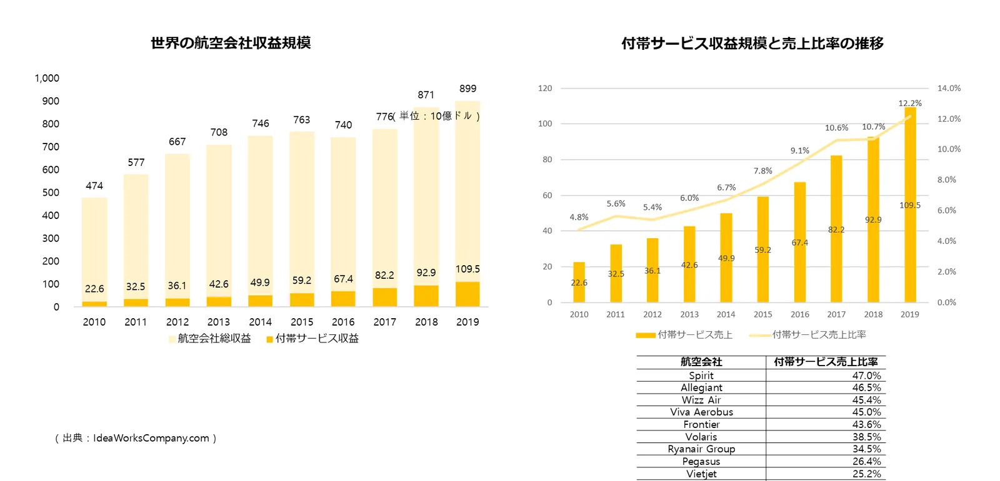

市場はすでに大きく、さらに成長中

1,095億ドル世界の航空付帯サービス収益（2019年）
約900億ドル世界の潜在的な座席指定市場（航空券市場の約10%と推計）
40%以上海外の主要LCCの売上に占める付帯サービス比率
オールウィンエアのサービス拡大
| 段階 | サービス | 対象 |
|---|---|---|
| 提供中 | 座席指定（AIレコメンド）、事前受託手荷物、機内食、優先手荷物、ゴルフパック | 航空券購入者全体、家族・ゴルフ旅行者 |
| 準備中 | Block Seat（売れていない座席をブロック単位で販売） | 旅行会社・団体・パッケージ |
| 準備中 | SIM・eSIM | 韓国からの出国者、訪韓外国人 |
| 準備中 | 送迎サービス（自宅 ↔ 空港） | 出国・帰国する旅行者、訪韓外国人 |
| 準備中 | 空港免税、空港施設の利用 | 出国する旅行者 |
| 再開協議中 | 空港ラウンジ、機内免税 | 出国する旅行者 |
なぜ「すき間」が「拡大」になるのか
- 販売先はそのまま。すでにつながっている旅行会社・OTAの画面に新しい商品が加わるだけなので、追加開発はほとんどありません。
- 供給元は販売先を一度に得られる。eSIM、送迎、空港サービスの事業者は、オールウィンエアに一度つなぐだけで提携販売先すべてに流通できます。
- 予約情報がレコメンドの根拠になる。旅程・同行者の情報をもとに、必要な人に必要な商品を提案するため購入率が高くなります。
- インバウンドにも広げる。日本をはじめ海外から韓国を訪れる旅行者にeSIM、空港送迎、空港サービスをつなぐ海外パートナーとも協力します。
新しい付帯サービスの供給元を募集しています
eSIM・ローミング、空港アクセス・送迎、空港免税、ラウンジ、ファストトラック、手荷物配送・預かり、旅行保険、現地ツアー・アクティビティなど、出発前から到着後まで旅行者に必要なサービスであれば一緒に取り組めます。海外・インバウンド提携 →
よくあるご質問
- 今後どのようなサービスが追加されますか？
- Block Seat、SIM・eSIM、自宅と空港を結ぶ送迎サービス、空港免税、空港施設の利用サービスを準備中で、空港ラウンジと機内免税は再開を協議しています。
- 新サービスが追加されたら販売先は再開発が必要ですか？
- ほとんどの場合不要です。すでにつながっている販売先の画面に商品が追加される方式のため、追加開発の負担はほとんどありません。
- 付帯サービスの供給元として提携できますか？
- はい。eSIM、送迎、空港サービス、免税などの事業者は、オールウィンエアに一度つなぐだけで提携販売先すべてに販売できます。
オールウィンエアとの連携を始めましょう
航空会社・付帯サービス提供事業者も、旅行会社・OTA・旅行プラットフォームも、ひとつの連携から始められます。連携方式とスケジュールは提携先の環境に合わせてご相談します。日本語・英語でのお問い合わせも可能です。
提携窓口メール（海外からはメールを推奨）partnership@allwin.co.kr
代表電話（韓国国内・平日 09:00〜18:00 KST）+82 1522-2284